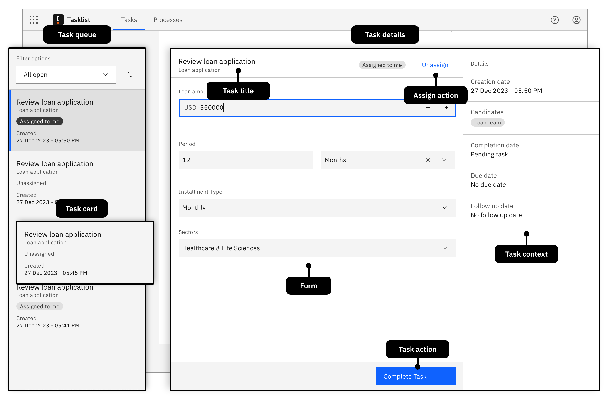
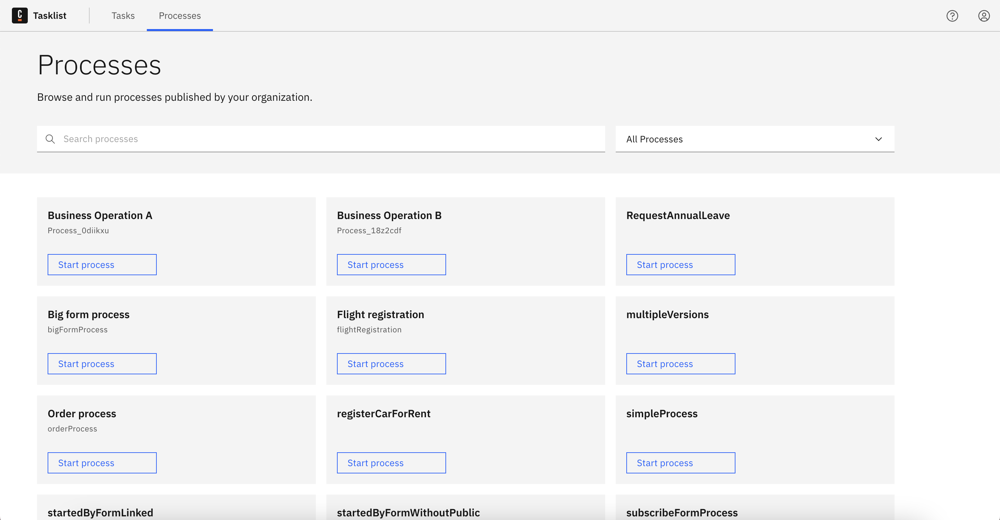
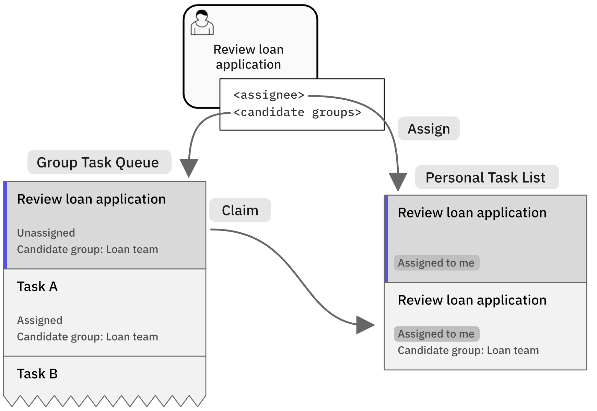

Introduction to task applications
Task applications are the interface between humans and Camunda processes to orchestrate human work. Learn key concepts of the architecture of task applications before you build your own.
What are task applications?
Task applications are end-user applications that allow humans to perform work orchestrated with a process. A user task (also referred to as a human task) represents a single work item to be performed by an individual or a group. The jobs of a task application include:
- Listing available tasks and allowing users to select a task to work on.
- Providing filter and search options for users so they can more easily find the right next task to work on.
- Presenting the selected task and an interface for completing the task, usually via a form.
- Providing an interface to create new tasks, e.g. by starting a new process.
- Provide insight into the progress of work tasks, including processes and cases.
- Aggregate information so users and their managers can assess the impact on process goals, such as KPIs and SLAs.
- Ensure tasks are visible only to authorized users.
Task applications play a key role in the orchestration of business processes. They enable the orchestration of processes that still contain manual work without automating each process step in advance. This unlocks the potential for continuous improvement and for identifying opportunities for process optimization and automation.
Not sure if you should use Camunda Tasklist, build your custom task application, or use a third-party application? Read the guide to understand human task management first.
Tasklist layout
Camunda 8 comes with a ready-to-use Tasklist UI that implements all key concepts of a task application. The Tasklist UI is a generic task application; your custom task application should probably be tailored to your specific use case and also include external data sources and tools.
The Tasklist UI is split into two main pages: the tasks page and the processes page.
Task page
The task page lists all tasks pending for a user or user group, and allows users to pick and claim a task from that queue to work on. On the same page, the details of a selected task are displayed including the form that the user must submit in order to execute and complete the task. The task page is optimized for efficient workflows, where the most important tasks should be worked on first.
The task page is divided into two panels, similar to the layout of messaging clients:

Task queue side panel
The task queue side panel lists all tasks pending for a user or user group. It comes with filter and sort options that allow users to identify the right task to work on next. The tasks can be sorted by the creation date, due date, or follow-up date.
Learn more how to work with the task queue in the Tasklist user guide.
Task details panel
The task details panel shows the details of the selected task. A form is displayed in the center of the details panel, which must be filled out to complete a task.
Typically, a task application utilizes forms to capture information from the user, to make a decision, to collect the results from a real-world task, or to provide task instructions to the user.
However, a user task is not limited to forms. A user task could also represent navigating to an external desktop or web application, where a task is to be performed, such as updating a record in a CRM. You can even use them to track physical work or actions using sensors, IoT devices, or any interface that can talk to the web, by using the APIs or registering a job worker to the job type io.camunda.zeebe:userTask (compatible with job worker-based user tasks only).
For these cases, utilize the flexible custom form key.
On the top of the form, a header shows the title of the task to work on, and the current assignee. Depending on the status of the assignment, a button allows you to assign the task to yourself or release it to the queue.
At the bottom of the form there is a button with which you can complete the task.
To the right of the task, you find additional information about the task, such as the due date of the task, or the user groups that can work on this task.
Potential extensions are dependent on your use case. You can consider adding more buttons to the bottom of the panel to indicate different task outcomes such as "approve" or "reject", or you could add a list of attachments to the right panel.
Learn more how to work with the task details panel in the Tasklist user guide.
Processes page
The Processes page lists all processes available to the logged in user, and allows the user to start a process from there.

Potential extensions are dependent on your use case. You can consider grouping processes by apps, domains, or teams, showing a process history, or adding a list of open process instances or cases.
Learn more about the Processes page in the Tasklist documentation.
There are many alternative layouts that you can choose for creating your task application. Design the layout based on the use case. For longer running processes and tasks with a lot of hierarchy between the tasks and the associated data, for example, tabular views together with multi-part detail views are more suitable.
Task lifecycle
Every task follows a task life cycle. In the typical task life cycle, a task can, for example:
- Be created, but not yet assigned
- Be assigned and ready to work
- Be open or started
- Be paused and marked with a follow-up date
- Be delegated to another user
- Be completed or canceled
Before you create your task application, you should be clear about which task lifecycle is suitable for your use case.
The lifecycle of human tasks is mostly a generic issue. There is no need to model common aspects into all your processes, as this often makes models unreadable. Use Camunda task management features or implement your requirements in a generic way.
Learn how to define and implement your task lifecycle on the user task lifecycle page.
Task assignment
Every task can be assigned to either a group of people, or a specific individual. An individual can claim a task, indicating that they are picking the task from the pool (to avoid multiple people working on the same task).

As a general rule, you should assign human tasks in your business process to groups of people instead of specific individuals. This avoids bottlenecks (such as high workloads on single individuals or employees being on sick leave) and can greatly improve your process performance.
In the XML of a user task, this is represented as follows:
<bpmn:userTask id="task_review_loan">
<bpmn:extensionElements>
<zeebe:assignmentDefinition candidateGroups="Loan team" />
</bpmn:extensionElements>
Then, require individual members of that group to explicitly claim tasks before working on them. This way, you avoid different people trying to work on the same task at the same time, which can cause a race condition.
Additional elements and alternative use cases
Often, task applications support the collaborative work on tasks, generally done using comments. Document management is a common use case of task applications, allowing users to upload, manage, and review attachments. Task applications are also the right place to browse, reference, and manage case management data.
Task applications are not limited to web applications to be worked on desktops. Camunda has been used successfully for the the development of omnichannel customer-facing applications, such as mobile banking apps, often via a backend-for-frontend implementation.
Next steps
You learned the basic concepts of a task application. Your possible next steps are:
- Learn how to embed or customize Camunda Forms to render tailored forms that can be designed by business users.
- Learn how to utilize Camunda 8 APIs to query and execute tasks in your task application, and to enrich it with process execution data.